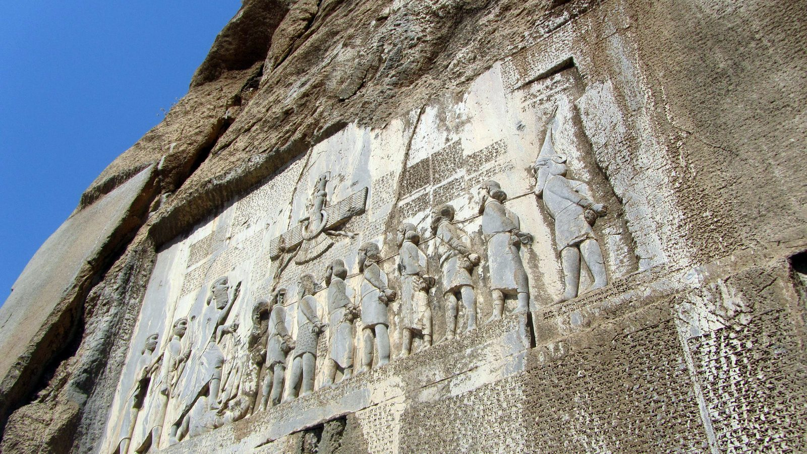
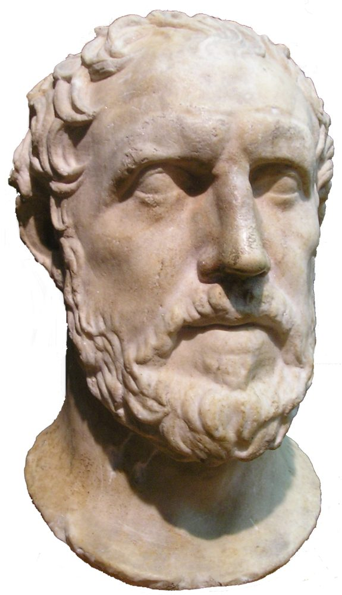
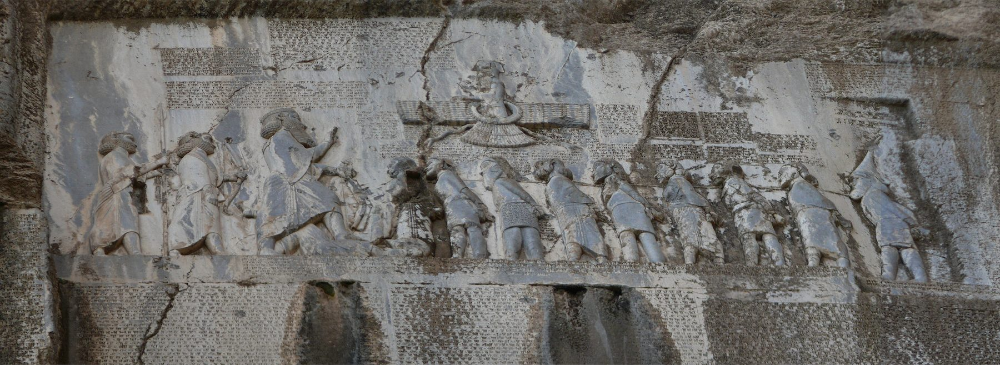

Unit 1 · The investigation of ancient sites and sources · Lesson 4
OVPRL workshop I: ancient texts and inscriptions
What is a written source reliable for, and how do you say so in one strong paragraph?
Year 11 Ancient History · Present with → or space · Read on a phone with R

Connect · 3 minutes · everyone writes one line · press K for the timer
Name one dating method, what it can date, and one limit
method → what it can date → one limit
Radiocarbon dating → once-living (organic) material such as wood, bone or charcoal → organic material only, and it gives an age range, not an exact year.
Thermoluminescence → fired material such as pottery → it dates the last heating, so it only works on material that was heated.
Today: written sources. Carbon-14 cannot tell us whether a writer is telling the truth, so we ask who wrote it, when, why, and what it is reliable for.
Learning intentions and success criteria · 2 minutes
Today’s goals
- analyse ancient texts and inscriptions using OVPRL
- write a source analysis as connected prose
- complete a full OVPRL of an ancient text
- explain how a source can be reliable for one question and unreliable for another
- write an OVPRL paragraph that uses provenance phrases and precise verbs
Syllabus outcomes: AH-11-05 analyses different types of sources for evidence to support a historical account or argument · AH-11-06 explains differing interpretations and representations of the past · AH-11-07 communicates historical understanding, applying historical knowledge, terms and concepts. Life Skills: AH-LS-08 uses sources to form conclusions about the past · AH-LS-11 communicates information about the past using historical terms and concepts.
Note-making · the routine for the whole course
How to structure your notes
questions and key terms, written after
short phrases, arrows (→ leads to), abbreviations (c. = about; BCE = Before the Common Era)
- 1Rule up the page firstA cue column about a quarter of the page wide; title and date at the top; room for a summary at the bottom.
- 2Listen and look, then writeDon’t copy while a slide is being explained. Phrases, not sentences.
- 3Write your own notes at each ✎ checkpointThen compare with the model notes, one row at a time. Add what you missed in a second colour.
- 4Write the cue questions afterwardsUse exam verbs: explain, analyse, assess. To revise, cover your notes and answer the cues.
- 5Finish with a three-sentence summaryTwo checkpoints today: Thucydides 1.22 and the five moves · the Behistun inscription. Your paragraph today is prose, not notes.
Key vocabulary · add to the unit word wall
Words for reading and writing about written sources
| Sources | Meaning |
|---|---|
| inscription | Words carved or written on a hard surface such as stone, clay or metal. |
| decipherment | Working out how to read a lost script or language. |
| reliability | How far a source can be trusted for a particular question. |
| perspective | The point of view of an individual or group, in the past or the present. |
| provenance | Where an object was found and its history of ownership since; without it, an object loses its context and may be a fake. |
| coincidence (in Crawley’s 1874 English) | Agreement: two accounts that coincide say the same thing. A “want of coincidence” is a lack of agreement. |
| partiality | Favouring one side over the other. |
| Writing moves | Meaning |
|---|---|
| propaganda | A message made to persuade people to see a ruler or a cause in a particular way. |
| provenance phrase | An opening phrase that says who made a source, when, where, and from what position. |
| relating verb | A verb that links a source to what it shows or does: presents … as, portrays, reveals. |
| nominalisation | Turning an action or quality into a noun: Darius legitimised his rule → Darius’s legitimisation of his rule. |
| evaluative modality | Words that show how sure a judgement is: may, probably, is likely to. |
| evaluative verb | A verb that judges a source precisely: overstates, omits, is corroborated by. |
1 · Ancient texts · supported reading — who wrote it, when, and why?
Thucydides: a general who wrote the history of his own war

- Who: Thucydides, son of Olorus, an Athenian, and a commander in the war he describes
- What: the History of the Peloponnesian War, fought between Athens and Sparta and their allies, 431–404 BCE; his account is unfinished and breaks off in 411 BCE
- When: he began writing when the war broke out, and lived through the whole of it
- Exile: after he arrived too late to save the city of Amphipolis from the Spartans, he spent twenty years in exile from Athens
- What we read: his Greek, copied by hand for centuries, in Richard Crawley’s English translation (1874)
It was also my fate to be an exile from my country for twenty years after my command at Amphipolis; and being present with both parties, and more especially with the Peloponnesians by reason of my exile, I had leisure to observe affairs somewhat particularly.
Thucydides, History of the Peloponnesian War 5.26, trans. R. Crawley (1874) · the Peloponnesians = Sparta and its allies
Was his exile a help or a problem for a historian of this war?
Both. Exile let him watch both sides, especially Sparta’s. But he was no neutral observer: he had commanded in the war, failed at Amphipolis, and lost his place in his own city, which may have shaped how he judged Athens.
1 · Ancient texts · supported reading — read together, then annotate
Thucydides on his own method
With reference to the speeches in this history, some were delivered before the war began, others while it was going on; some I heard myself, others I got from various quarters; it was in all cases difficult to carry them word for word in one's memory, so my habit has been to make the speakers say what was in my opinion demanded of them by the various occasions, of course adhering as closely as possible to the general sense of what they really said. And with reference to the narrative of events, far from permitting myself to derive it from the first source that came to hand, I did not even trust my own impressions, but it rests partly on what I saw myself, partly on what others saw for me, the accuracy of the report being always tried by the most severe and detailed tests possible. My conclusions have cost me some labour from the want of coincidence between accounts of the same occurrences by different eye-witnesses, arising sometimes from imperfect memory, sometimes from undue partiality for one side or the other. The absence of romance in my history will, I fear, detract somewhat from its interest; but if it be judged useful by those inquirers who desire an exact knowledge of the past as an aid to the interpretation of the future, which in the course of human things must resemble if it does not reflect it, I shall be content. In fine, I have written my work, not as an essay which is to win the applause of the moment, but as a possession for all time.
Thucydides, an Athenian general, writing during and after the war of 431–404 BCE · trans. Richard Crawley (1874) · the whole chapter
Speeches: did he record them word for word? No. He wrote what he thought each occasion demanded, keeping to the general sense.
Events: how does he say he checked them? His own observation and other people’s reports, each tested as severely as he could.
Why did eyewitnesses disagree? Imperfect memory, and partiality: favouring one side.
Why did he write, and for whom? For future inquirers who want an exact knowledge of the past, not for applause now.
One question it raises: he says his tests were severe, but he never shows them or names his informants. How could we check?
One way: compare him with other evidence. A treaty he quotes (5.47) survives in part on a stone found on the Athenian Acropolis, and the two texts match apart from minor variations.
2 · I do — modelling · watch the paragraph being written, and the choices behind it
One paragraph, written live
How useful is Thucydides 1.22 for judging the reliability of his History of the Peloponnesian War?
One connected paragraph: Origin → Value → Purpose → Reliability → Limitations, then a decisive judgement. While you watch, note one choice the writer makes, and why.
Deconstructed: verb how useful (not a NESA key word; our department reads it as evaluate: NESA, Glossary of key words, “Make a judgement based on criteria. Determine the value of.”) · topic: Thucydides 1.22 · limits: for judging the reliability of his History · do: one OVPRL paragraph that ends on a judgement.
How should it begin?
“Thucydides was an Athenian.” or a phrase that says who, in what role, and in what situation?
A provenance phrase, such as “Written by Thucydides, an Athenian general who spent twenty years in exile, …”: his rank and his exile shape what he could know.
Which verb is accurate?
“1.22 proves his tests were severe” or “Thucydides claims his tests were severe”?
Claims. We have only his word: he never shows the tests or names the eyewitnesses.
What does perspective add?
“He was biased.” or say whose side he saw, and what that means?
Name the perspective and its effect: exile let him watch both sides, but he had a personal stake in how Athens was judged.
How should reliability be judged?
“1.22 is reliable.” or reliable for what?
For a question: reliable evidence of the standards he set himself, but not proof that his History met them.
2 · I do — a prepared model (Band 6 standard) and its five moves · one press per move
What a strong OVPRL paragraph does
The five moves
Then a decisive last sentence that answers the inquiry question. No roadmap, no summary: the paragraph ends on its judgement.
Make it weaker? Swap “he says was tried” for “proves”, or “may equally have coloured his judgement” for “was biased”.
Notes checkpoint 1 of 2
Thucydides 1.22 and the five moves
Write your own notes first. Then compare, row by row, and add what you missed in a second colour.
3 · We do — your language bank · keep it open for the We do and the You do
Language bank: words that do the analysis
| Move | Use it to | Try |
|---|---|---|
| 1 · Provenance phrase | open with who made it, when, where, and from what position | Composed by … · Carved on the orders of … · Issued by … in … · Writing in exile, … · As a king addressing his whole empire, … |
| 2 · Relating verb | say what the source does, not just what it says | presents … as · portrays · reveals · illuminates · distinguishes … from |
| 3 · Nominalisation and noun groups | pack an idea into a noun, then link the next sentence to it | legitimise → this legitimisation · claim → his claim to the throne · a priestly decree in three scripts from 196 BCE |
| 4 · Evaluative modality | show how sure you are, no more and no less | may · probably · is likely to · suggests · it is unlikely that |
| 5 · Precise judgement | judge reliability for a question, with a precise verb | overstates · omits · is corroborated by · offers a partisan account of · reliable for … but not for … because … |
One sentence that does all of it: Darius’s appeal to Ahuramazda presents his rule as divinely chosen, legitimising a king who had seized the throne. (a ‘This Does That’ sentence: evidence → precise verb → what it does)
3 · Inscriptions · We do — the source
The Behistun inscription: a king tells his own story

- Who: Darius I, king of Persia, who ruled 522–486 BCE
- What: a relief and a long inscription in three languages: Old Persian, Elamite and Babylonian
- When and where: carved about 520 BCE, about 100 metres up a cliff at Behistun (Bisotun), western Iran, beside the road from Babylon to Ecbatana
[Col. I, §I] I am Darius, the great king, the king of kings, the king of Persia, the king of the provinces, the son of Hystaspes, the grandson of Arsames, the Achaemenian. [§V] (Thus) saith Darius, the king: By the grace of Auramazda am I king; Auramazda hath granted me the kingdom. [§XIII] There was none who dared say aught against Gaumâta, the Magian, until I came. Then I prayed to Auramazda; Auramazda brought me help. … I, with a few men, slew that Gaumâta, the Magian, … [Col. IV, §LVI] Whosoever shall read this inscription hereafter, let that which I have done be believed; thou shalt not hold it to be lies.
Darius I, about 520 BCE · trans. L. W. King and R. C. Thompson (British Museum, 1907) · saith = says · hath = has · aught = anything · Auramazda = Ahuramazda, the god Darius worshipped · Gaumâta, the Magian = the man Darius killed: one of the Magi (a Median group who served as priests), who, Darius says, had pretended to be Smerdis, son of King Cyrus
Why might Darius carve this 100 metres up a cliff, beside a main road?
To be seen rather than read: a permanent display of royal power where travellers passed, too high for anyone to deface. The words also travelled: a later Aramaic copy, written about a century afterwards, was found at Elephantine in Egypt.
3 · We do — joint construction · I scribe, you supply each move · vote 1 or 2 fingers on each choice
Our paragraph, part 1: Origin, Value, Purpose
Inquiry question: How useful is the Behistun inscription for understanding how Darius I became king?
Provenance phrase: who, when, where, from what position?
Which is more precise: 1 · made by Darius · 2 · carved on the orders of Darius?
Carved on the orders of Darius I about 520 BCE, high on a cliff beside the road from Babylon to Ecbatana, the Behistun inscription is the king’s own account of how he took the throne in 522 BCE.
Value: what can it tell us, for this question?
1 · tells us · 2 · reveals?
Its value lies in revealing the official version of Darius’s accession: the king claims that no one ‘dared say aught against Gaumâta, the Magian’ until he came, and that he killed this rival ‘with a few men’.
Purpose and perspective: a relating verb, then a nominalisation
1 · Darius says he is king · 2 · Darius presents his kingship as …?
By repeating that he rules ‘by the grace of Auramazda’, Darius presents his kingship as chosen by the god; this legitimisation of his rule was the inscription’s main purpose, displayed in three languages on the rock and copied for other parts of a vast empire.
Perspective check: whose voice is this, and who is missing?
Darius’s alone. Missing: the rebels he calls liars, and Gaumâta himself.
3 · We do — joint construction · keep going
Our paragraph, part 2: Reliability and Limitations
Inquiry question: How useful is the Behistun inscription for understanding how Darius I became king?
Reliability: modality and a precise evaluative verb
Herodotus tells a similar story. Does that 1 · confirm Darius’s account, or 2 · corroborate it only weakly?
Herodotus tells a similar story (Histories 3.61–79), but he probably drew on the same official version, so this corroboration is weaker than it appears; indeed, Darius’s insistence that readers must not ‘hold it to be lies’ suggests that he expected his account to be doubted.
Limitations, and a precise judgement: reliable for … but not for … because …
1 · Darius was biased · 2 · it is the winner’s account?
The inscription is therefore reliable evidence of how Darius wanted his accession to be seen, but, on its own, not of how he actually gained the throne, because no account from the losing side survives; historians cannot rule out that the man he killed was the real Smerdis (Bardiya), Cyrus’s son.
A decisive last sentence: answer the question
Behistun is thus invaluable as Darius’s propaganda but, on its own, weak evidence for the truth of his accession.
Notes checkpoint 2 of 2
Inscriptions: the Behistun inscription
4 · You do · check first · hinge question · hold up A, B, C or D
Which sentence makes the most precise judgement of reliability?
- AThe Behistun inscription is reliable evidence of how Darius became king, but not of how he wanted to be seen, because it was carved at the time.
- BThe Behistun inscription is reliable evidence of how Darius wanted to be seen, but not of anything else, because a biased source is useless.
- CThe Behistun inscription is reliable evidence of how Darius wanted his rule to be seen, but, on its own, not of how he actually became king, because it gives only the winner’s account.
- DThe Behistun inscription is reliable evidence of how Darius became king, but not of the rebels’ reasons, because Herodotus tells the same story independently.
C. It names what the source is reliable for, what it cannot show on its own, and a reason that fits. A reverses the two and assumes that being carved at the time makes it true. B treats bias as a dead end: bias is evidence of perspective, and the inscription is still evidence of much else (its languages, the provinces Darius claimed, his ideology). D treats Herodotus as independent, but he probably repeats the official version.
4 · You do — your source · read it first, then write
The Rosetta Stone: a decree in three scripts

- What: one copy of a decree, carved three times: in hieroglyphic, Demotic and Greek
- Who: a council of Egyptian priests, honouring the 13-year-old king Ptolemy V
- When: 196 BCE, on the first anniversary of his coronation
- Found: in 1799 by French soldiers near el-Rashid (Rosetta); in the British Museum since 1802
- Why it matters: its Greek text helped Thomas Young and then Jean-François Champollion (1822) decipher hieroglyphs
[Who made it] The chief priests and prophets … and all the other priests who have come together to the king from the temples throughout the land to Memphis … declared: [What the king did] … being a god sprung from a god and goddess … has dedicated to the temples revenues in money and corn … of the revenues and taxes which he receives from Egypt some has wholly remitted and others has lightened … having gone to Lycopolis, in the Busirite nome, which had been occupied and fortified against a siege … presently took the town by storm, and destroyed all the impious men in it … [How it was to be shown] This decree shall be set up on a stele of hard stone, in sacred and native and Greek letters, and set up in each of the first, second, and third (rank) temples at the image of the ever-living king.
Decree of the priests at Memphis, 196 BCE · trans. E. R. Bevan, The House of Ptolemy (1927) · nome = district · sacred, native and Greek letters = hieroglyphic, Demotic and Greek
How useful is the Rosetta Stone for understanding Ptolemaic Egypt?
4 · You do · 13 minutes · press K for the timer · your paragraph is collected
Write your OVPRL paragraph on the Rosetta Stone
- Answer: How useful is the Rosetta Stone for understanding Ptolemaic Egypt?
- One connected paragraph: Origin → Value → Purpose → Reliability → Limitations.
- Use the five moves (language bank) and end with a decisive judgement.
Deconstructed: verb how useful (our department reads it as evaluate) · topic: the Rosetta Stone · limits: for understanding Ptolemaic Egypt, not the story of the decipherment · do: one connected OVPRL paragraph that ends on a decisive judgement.
Start each move with: Issued by … in …, the Rosetta Stone … · Its value for understanding Ptolemaic Egypt lies in … · The priests present Ptolemy V as … · It is reliable for … but not for … because … · It cannot tell us … · Overall, … Use the fact list and the OVPRL routine on page 2 of your booklet.
Compare Behistun and the Rosetta Stone as official ‘messages’: which is more useful for understanding how rulers wanted to be seen, and why?
Issued by a council of Egyptian priests at Memphis in 196 BCE and carved in hieroglyphic, Demotic and Greek, the Rosetta Stone preserves one copy of a decree honouring the 13-year-old Ptolemy V. Its value for understanding Ptolemaic Egypt lies in what it reveals about the relationship between a Greek-speaking dynasty and the native priesthood: the decree records the king’s remission of taxes, his gifts to the temples and his storming of rebel-held Lycopolis, evidence that royal authority was contested. Its three scripts, moreover, illuminate a state that was administered in Greek while Demotic remained the native script of daily life. Yet the priests present Ptolemy as a benevolent “god sprung from a god and goddess”, because the decree’s purpose was to honour a king whose favour secured their privileges; such praise is likely to overstate royal generosity and to understate the scale of unrest. The decree is therefore reliable evidence of official ideology and of the concessions the crown made to the temples, but not of how ordinary Egyptians experienced Ptolemaic rule, which this priestly voice omits. Ultimately, the Rosetta Stone is most useful not as an impartial account of Ptolemaic Egypt but as a record of how power was negotiated between its rulers and its priests.
Finish your notes If time · or at home
Summary: three sentences
- What can ancient texts and inscriptions tell historians, and what limits them?
- How can one source be reliable for one question and unreliable for another?
- What makes an OVPRL paragraph strong?
Ancient texts and inscriptions preserve their makers’ own words, so Thucydides 1.22 reveals the method a historian says he used, and the Behistun inscription and the Rosetta Stone reveal how a king and a council of priests wanted power to be seen, but each speaks for an elite author with a purpose. A source is reliable for some questions and not others: Behistun is strong evidence of Darius’s propaganda but, on its own, weak evidence of how he really became king. A strong OVPRL paragraph moves from a provenance phrase through value, purpose, reliability and limitations, using relating verbs, nominalisation and modality, and ends with a decisive judgement.
Check · 8 minutes · build the checklist together · then hand in your paragraph
A strong OVPRL paragraph …
Look back at the model on slide 9. What did that writer do that we should do? Five points, in your own words.
- 1opens with a provenance phrasewho made the source, when, where, and from what position
- 2uses precise evidence for its valuea short quotation or detail from the source, tied to the inquiry question
- 3explains purpose and perspectivewith a relating verb: presents … as, portrays, reveals
- 4judges reliability for this questionreliable for … but not for … because …, with modality and a precise evaluative verb
- 5names a limitation and ends decisivelylinks ideas with nominalisation; the last sentence answers the question, with no roadmap or summary
Reliable for which question, and how do you know?
The Rosetta Stone is reliable for how the priests wanted Ptolemy V to be seen and for the concessions the crown made to the temples, because it is the priests’ own decree; it is not reliable for how ordinary Egyptians experienced his rule, which it never records.
Hand in your paragraph: next lesson you get back one strength and one next step, marked against this checklist. Then check yourself against today’s three “I can” statements.
Next lesson: OVPRL on sources without words: petroglyphs and iconography.
Practice and review · 1 of 3 · true, false, justify
True or false? Justify your answer
- 1Thucydides says he reported every speech word for word. False — he made speakers say what he thought each occasion demanded, keeping as close as he could to the general sense.
- 2The Behistun inscription is carved in three languages. True — Old Persian, Elamite and Babylonian.
- 3Because Darius ordered the Behistun inscription, it is useless to historians. False — reliable for what? It is strong evidence of how Darius wanted to be seen and, on its own, weak evidence of what really happened.
- 4The Rosetta Stone records a decree made by a council of priests. True — priests assembled at Memphis honoured the young Ptolemy V in 196 BCE.
- 5Herodotus tells a similar story, so Darius’s version must be true. False — Herodotus probably drew on the same official version, so agreement is not independent proof.
- 6“Is likely to” and “may” are examples of evaluative modality. True — they show how certain the writer is.
Practice and review · 2 of 3 · writing
Practise the moves
Rewrite each as a noun group that could start the next sentence: Darius claimed that the god had chosen him. · The priests praised Ptolemy because he cut taxes.
Darius’s claim to have been chosen by the god … · The priests’ praise of Ptolemy, which followed his reduction of taxes, …
Finish for the Behistun inscription: It is reliable for … but not for … because …
The Behistun inscription is reliable for how Darius wanted his kingship to be seen, but, on its own, not for how he actually became king, because it gives only the winner’s account.
Past tense for events; present tense for what a source does. Fix the tenses: “The Behistun inscription claimed that Darius kills Gaumâta and takes the throne.”
The Behistun inscription claims that Darius killed Gaumâta and took the throne. (The source claims, now; the events happened then. Claims also keeps it as Darius’s own account.)
Compare Behistun and the Rosetta Stone as official ‘messages’: which is more useful for understanding how rulers wanted to be seen, and why?
Both inscriptions are official messages, but the Behistun inscription is the more direct evidence of how a ruler wanted to be seen, because Darius speaks in his own voice: he presents his kingship as granted “by the grace of Auramazda” and even instructs future readers not to “hold it to be lies”. The Rosetta Stone, by contrast, is a decree of the priests at Memphis, so its portrait of Ptolemy V as a generous “god sprung from a god and goddess” shows how the priesthood chose to honour a king whose favour it needed: the image of the ruler is filtered through a second set of interests. For royal self-presentation, then, Behistun is more useful; for the bargain between a dynasty and the priests it relied on, the Rosetta Stone reveals more.
Practice and review · 3 of 3 · cover your notes and answer from memory
Quick checks
- Explain how Thucydides says he checked his evidence. Events rest on what he saw and what others saw for him, each report tested as severely as possible; eyewitnesses disagreed through memory and partiality; the speeches are his own wording of the general sense.
- Assess Thucydides 1.22 as evidence for the reliability of his History. Reliable evidence of the standards he set himself, but not proof that he met them: he shows no tests and names no informants, and the speeches are his interpretation.
- Explain the purpose of the Behistun inscription. To prove Darius’s right to rule: it presents his kingship as granted by Ahuramazda and gives his version of how he killed Gaumâta and crushed the rebels.
- Assess its reliability for how Darius became king. Reliable for the official version and how he wanted to be seen; on its own, weak evidence of what actually happened, because only the winner’s account survives.
- Explain why the Rosetta Stone and the Behistun inscription mattered for decipherment. Each carries one text in three scripts or languages: the Rosetta Stone’s Greek helped Young and Champollion (1822) read hieroglyphs; Rawlinson’s copies of Behistun helped scholars unlock Old Persian and then Babylonian cuneiform.
- Name the five moves of a strong OVPRL paragraph. Provenance phrase, relating verb, nominalisation, evaluative modality, and a precise judgement of reliability, then a decisive last sentence.
Sources and credits
Where everything comes from
Thucydides, History of the Peloponnesian War 1.1, 1.22, 4.104, 4.106 and 5.26, trans. Richard Crawley (1874, public domain), from the Internet Classics Archive.
The Behistun inscription, Old Persian text, §§I, IV, V, X, XIII, LII, LVI–LVII, trans. L. W. King and R. C. Thompson, The Sculptures and Inscription of Darius the Great on the Rock of Behistûn in Persia (London: British Museum, 1907; public domain), checked against the 1907 page images. Facts: Livius, “Behistun” and “Darius the Great” (J. Lendering).
The Rosetta Stone decree, Greek text, trans. E. R. Bevan, The House of Ptolemy (London: Methuen, 1927; public domain), from LacusCurtius. Facts: the British Museum (EA 24), on Google Arts & Culture; J.-F. Champollion, Lettre à M. Dacier (Paris, 1822). Thucydides’ portrait: Royal Ontario Museum, 957.159.
Herodotus, Histories 1.101, 1.132 and 3.61–79, trans. George Rawlinson (public domain), from the Internet Classics Archive (teacher notes). The treaty in Thucydides 5.47: Attic Inscriptions Online, IG I³ 83. Decipherment: Livius, “Behistun (2)”; Hackl, “On the Rocks”, Iraq 87 (2025).
The model paragraphs, the class paragraph and the summary were written for this lesson.
Outcomes and content: NSW Education Standards Authority (NESA), Ancient History 11–12 Syllabus (2024). © NESA.
Teacher resource: Investigating the Past – Archaeological & Written Sources (class notebook).
- The Behistun relief and inscription, seen from below · Photo: Hamidreza Sorouri / Persian Dutch Network · CC BY-SA 4.0 · source
- Head of Thucydides (Royal Ontario Museum) · Photo: Captmondo (background removed) · Public domain · source
- The Behistun relief of Darius I · Photo: Patrick C (dynamosquito on Flickr) · CC BY-SA 2.0 · source
- The Rosetta Stone · Photo: Hans Hillewaert · CC BY-SA 4.0 · source


All images are public domain or openly licensed, and were resized for the web. Each is shared under the licence shown.